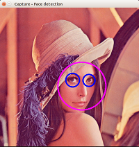

Using OpenCV with biicode dependency manager
Goals
In this tutorial you will learn how to:
- Get started with OpenCV using biicode.
- Develop your own application in OpenCV with biicode.
- Switching between OpenCV versions.
What is biicode?
biicode resolves and keeps track of dependencies and version compatibilities in C/C++ projects. Using biicode hooks feature, getting started with OpenCV in C++ and C is pretty straight-forward. Just write an include to OpenCV headers and biicode will retrieve and install OpenCV in your computer and configure your project.
Prerequisites
- biicode. Here is a link to install it at any OS.
- Windows users: Any Visual Studio version (Visual Studio 12 preferred).
Explanation
Example: Detect faces in images using the Objdetect module from OpenCV
Once biicode is installed, execute in your terminal/console:
$ bii init mycvproject $ cd mycvproject $ bii open diego/opencvex
Windows users also execute:
$ bii cpp:configure -G "Visual Studio 12"
Now execute bii cpp:build to build the project. This can take a while, until it downloads and builds OpenCV. However, this is downloaded just once in your machine to your “user/.biicode” folder. If the OpenCV installation process fails, you might simply go there, delete OpenCV files inside “user/.biicode” and repeat.
$ bii cpp:build
Find your binaries in the bin folder:
$ cd bin $ ./diego_opencvex_main

$ ./diego_opencvex_mainfaces
Developing your own application
biicode works with include headers in your source-code files, it reads them and retrieves all the dependencies in its database. So it is as simple as typing:
#include "diego/opencv/opencv/cv.h"
in the headers of your .cpp file.
To start a new project using OpenCV, execute:
$ bii init mycvproject $ cd mycvproject
The next line just creates a myuser/myblock folder inside “blocks” with a simple “Hello World” main.cpp into it. You can also do it manually:
$ bii new myuser/myblock --hello=cpp
Now replace your main.cpp contents inside blocks/myuser/myblock with your app code. Put the includes as:
#include "diego/opencv/opencv/cv.h
If you type:
$ bii deps
You will check that opencv/cv.h is an “unresolved” dependency. You can find it with:
$ bii find
Now, you can just bii cpp:configure and bii cpp:build your project as described above.
To use regular include directives, configure them in your biicode.conf file. Let your includes be:
#include "opencv/cv.h"
And write in your biicode.conf :
[includes] opencv/cv.h: diego/opencv [requirements] diego/opencv: 0
Switching OpenCV versions
If you want to try or develop your application against OpenCV 2.4.10 and also against 3.0-beta, change it in your biicode.conf file, simply alternating track in your [requirements] :
[requirements] diego/opencv: 0
replace with:
[requirements] diego/opencv(beta): 0
The first time you switch to 3.0-beta, it will also take a while to download and build the 3.0-beta release. From that point on you can change back and forth between versions just by modifying your biicode.conf requirements.
Find the hooks and examples:
This is just an example of how can it be done with biicode python hooks. Probably now that CMake files reuse is possible with biicode, it could be better to implement it with CMake, in order to get more control over the build of OpenCV.
Results and conclusion
Installing OpenCV with biicode is straight forward for any OS.
Run any example like you just did with objdetect module from OpenCV, or develop your own application. It only needs a biicode.conf file to get OpenCV library working in your computer.
Switching between OpenCV versions is available too and effortless.
For any doubts or further information regarding biicode, suit yourselves at Stackoverflow, biicode’s forum or ask biicode, we will be glad to help you.